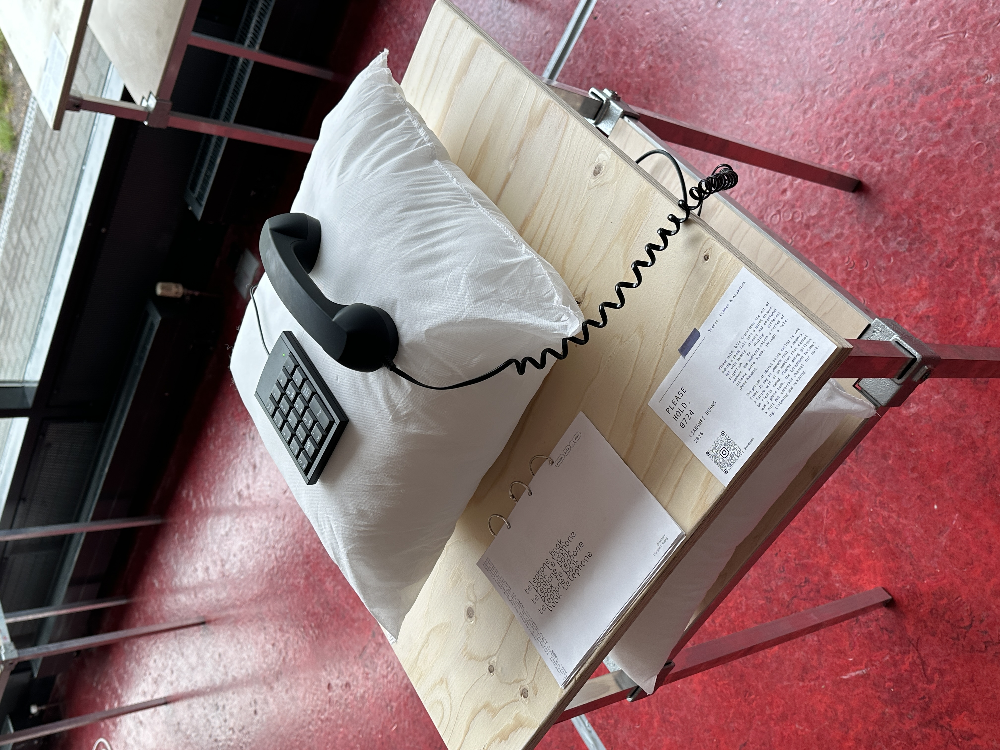
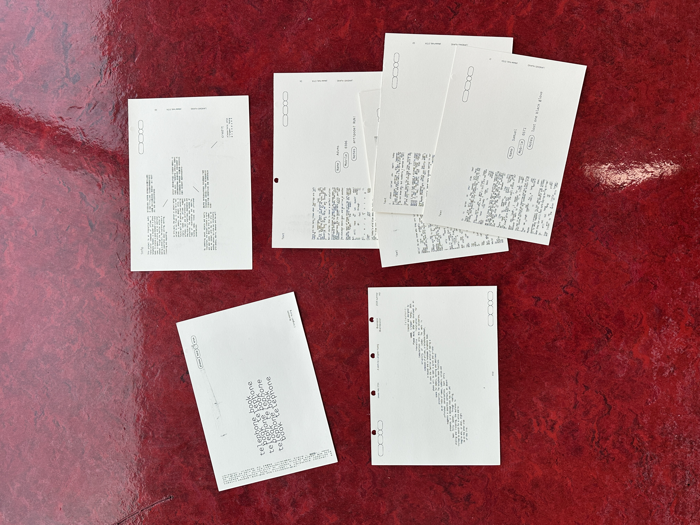
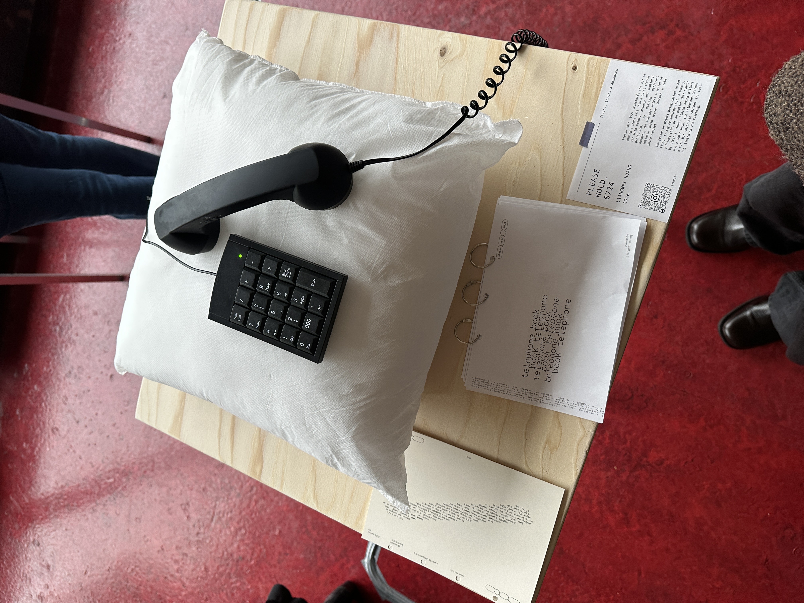
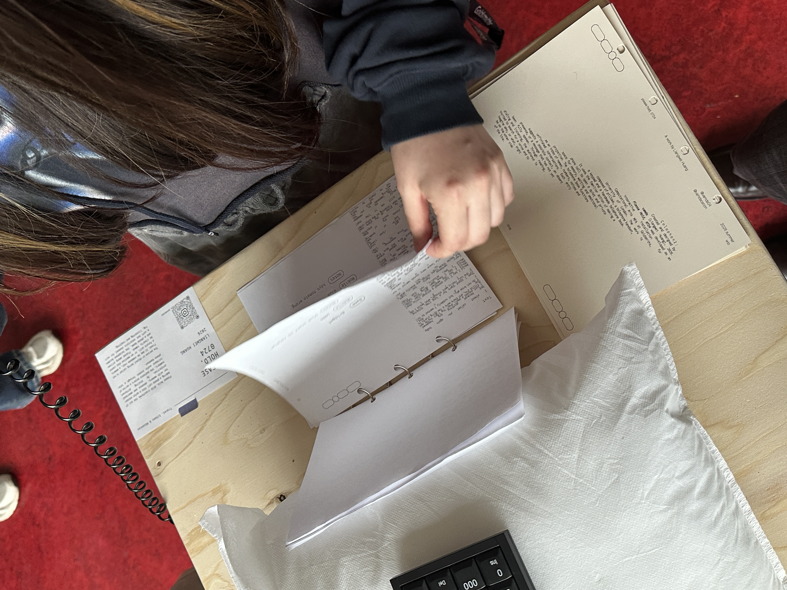
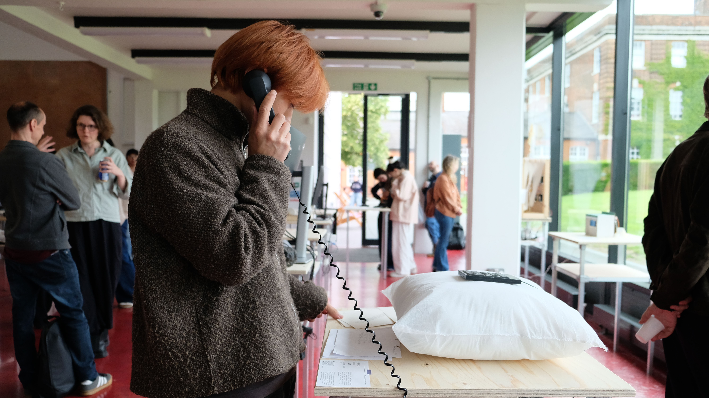

please hold, 0724
Please Hold, 0724 transforms the act of making a phone call into a quiet encounter with memory, absence and emotional projection. By dialling different numbers, the audience enters a series of intimate audio scenes through a telephone handset. The person or object being called is not fixed. It may be someone real, a memory, a future self, or an emotion that cannot be clearly named. Placed among pillows and a phone book, the telephone becomes a soft but uncertain channel for waiting, listening and reaching.
Liangwei Huang (vamds)
A human being.